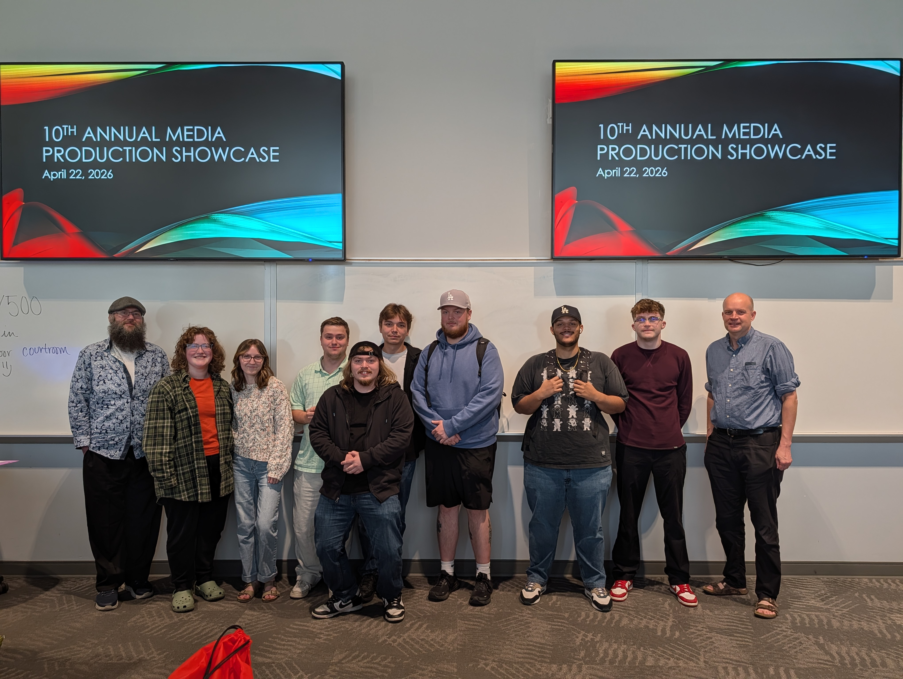

Media Production Class Video
This project showcases my ability to plan, shoot, and edit high-quality video content. It reflects my skills in cinematography, storytelling, pacing, and post-production editing using Adobe Premiere Pro.


Marketing Coordinator / Technical Director & Broadcast Lead
I'm a Media Production major (minoring in Management) at Radford University, where I blend creative storytelling with strategic marketing. As Marketing Coordinator for a regional brokerage firm, I lead social media strategy, video production, and email marketing, and support CRM development and web design. As Broadcast Technical Director for Radford's Esports Center, I direct live production for weekly broadcasts using vMix, OBS, and Stream Decks. My toolkit spans Adobe Premiere Pro, CapCut, DaVinci Resolve, Canva, and both camera and audio production, and I hold certifications including HubSpot Academy Inbound and Canva Essentials.
This project showcases my ability to plan, shoot, and edit high-quality video content. It reflects my skills in cinematography, storytelling, pacing, and post-production editing using Adobe Premiere Pro.
A news package created for my COMS 246 Audio Production course, highlighting a notable location on campus through an on-camera interview with someone connected to it. I developed the concept, filmed with a JVC camera, conducted the interview, and edited the final piece using multitrack editing in Adobe Premiere Pro to combine interview footage, natural sound, voiceover, and b-roll.
Created for the Christopher's 38th Annual Video Contest for college students, this scholarship-based submission highlights my cinematography, writing, production planning, and editing skills. The project was filmed and edited entirely on mobile, demonstrating adaptability, technical resourcefulness, and professional storytelling under constraints.
A midterm project for my COMS 246 Audio Production course, featuring an interview about a subject's luckiest life moment and how it shaped their perspective. Selected for Radford University's annual Media Production Showcase for its audio storytelling and production quality. I recorded the interview, wrote and performed voiceovers, and used multitrack editing in Adobe Premiere Pro to weave together audio, music, and sound effects into a polished listening experience.
A 60-second opening sequence for Undercover Underclassman, an original comedy series with a goofy spy-movie feel, created for my COMS 346/347 course. By day, the main character is an ordinary, nerdy college student; by night, he's a confident secret agent working undercover. Modeled on classic sitcom intros like The Golden Girls, the piece uses a montage of hypothetical moments from across the series to set up the characters, setting, and tone.
I developed the concept, filmed on a DSLR, and edited in Adobe Premiere Pro, cutting at least 15 distinct shots to a music bed that mixes secret-agent suspense with lighthearted humor. The assignment allowed no recorded sound from the footage and no color or exposure adjustments, required a fade from and to black with the music, and had to run exactly 60 seconds. Those limits pushed me to sell both the spy genre and the comedy through shot selection, pacing, and continuity alone.
I developed a WordPress website for a local business, improving their online presence and creating a user-friendly platform tailored to their audience.
View projectFrom October 6, 2025 to present, I have contributed to the firm's digital content and brand presence, first as a Digital Marketing Intern and later as a Digital Marketing & Social Media Specialist. This progression reflects my growth in responsibility across content creation, visual branding, and strategic digital communication.
In this role, I have edited videos produced for the firm's YouTube channel, designed thumbnails, and at times written or supported script development for published video content. I also contributed to the channel's visual branding, including the profile banner, helping create a cohesive and professional look across the firm's digital platforms.

Selected to present at Radford University's 10th Annual Media Production Showcase, hosted by Michael Meindl and Matthew Turner. The featured work was This Lucky Life, a podcast midterm project from COMS 246 Audio Production, presented alongside fellow Media Production students.
Email: cmelissaj@outlook.com